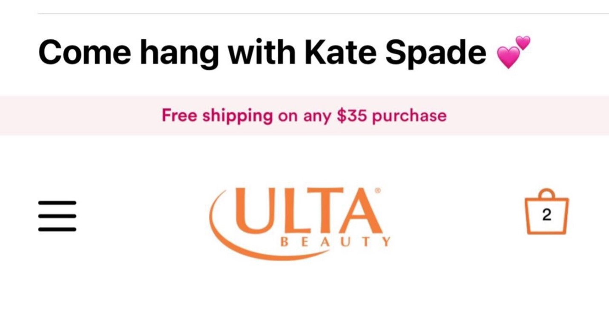
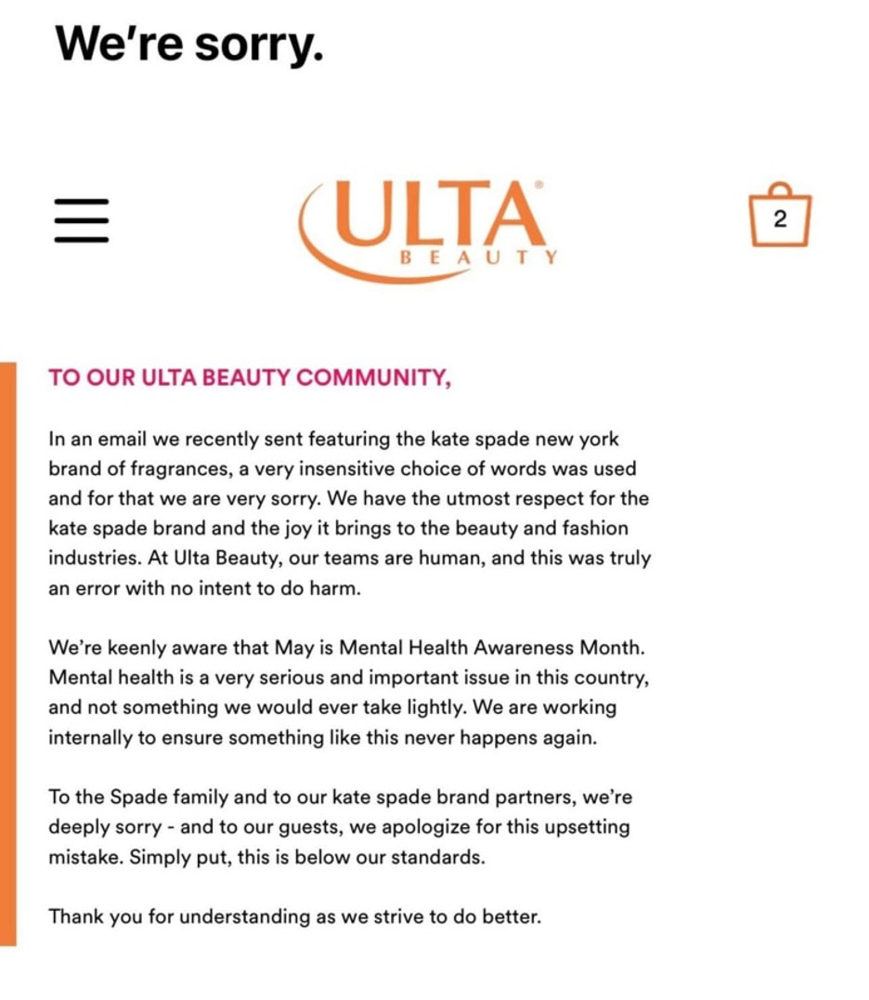
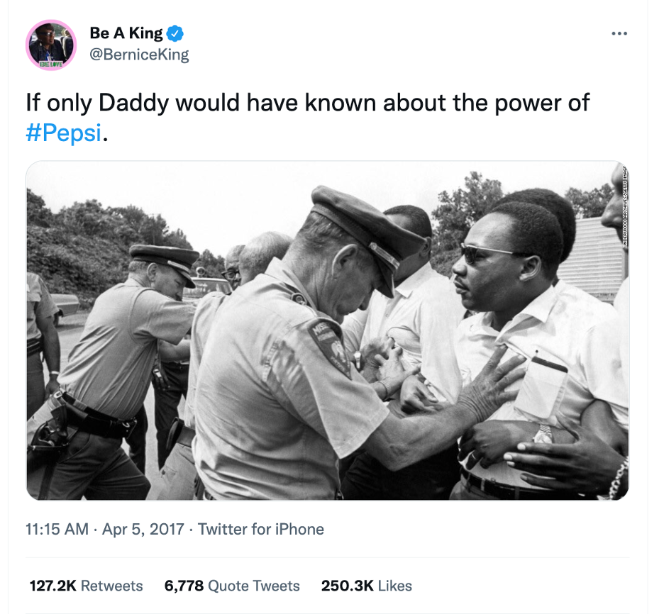
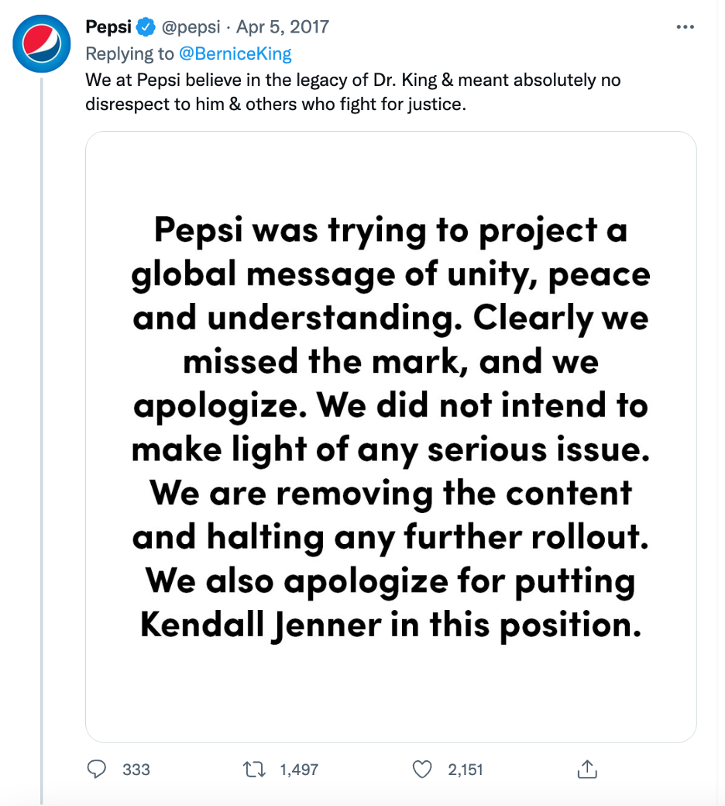
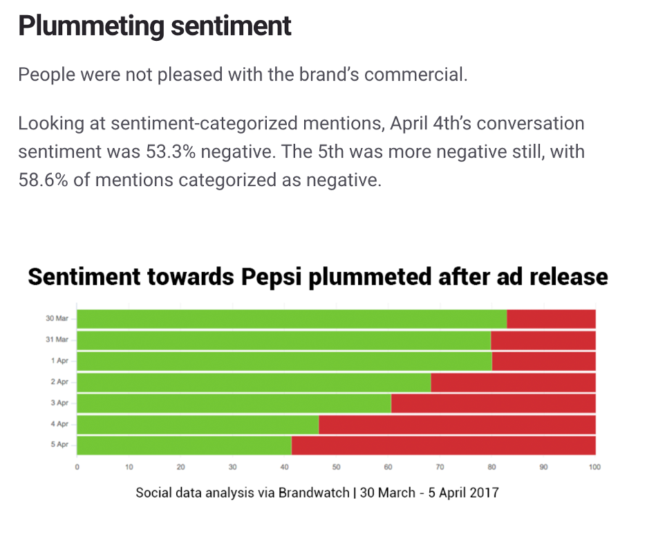

6 Public Relations
6.1 First, some reading
Read Understanding Media and Culture Chapter 12.2
6.2 Public Relations and Advertising
You already know a great deal about PR from your first reading. We hope you took notes over the Four PR Models, the functions of PR and the anatomy of a PR campaign. While this reading discusses how PR is replacing advertising, we live in a society where the two work together not against one another. We teach from an integrated marketing communications (IMC) approach in our college, and that is what you will see in the industry at some of the biggest firms like Edelman and Weber Shandwick. According to the American Marketing Association, IMC is, “a planning process designed to assure that all brand contacts received by a customer or prospect for a product, service, or organization are relevant to that person and consistent over time.” It notes all brand contacts here, thus incorporating the functions of both advertising and public relations.
While the two work together, there are big differences, here are some common characteristics to distinguish the two:
| Advertising | Public relations |
|---|---|
| Simple/fixed messages | Complex messages evolve over time |
| Paid placement of content | Transmitted indirectly |
| Controlled publicity | Attempts to secure favorable media coverage |
| Owned, earned, paid (OEP) | Paid, earned, shared, owned (PESO) |
6.3 Public Relations Society of America (PRSA) and Ethics
PRSA is the professional development and guiding body of the public relations profession. You may have heard of PRSSA? That’s the student chapter here at UNL. This organization works to educate and connect public relations professionals and students. This organization has a guiding code of ethics, read more below:
PRSA Code of Ethics
The PRSA Code of Ethics applies to PRSA members. The Code is designed to be a useful guide for PRSA members as they carry out their ethical responsibilities. This document is designed to anticipate and accommodate, by precedent, ethical challenges that may arise. The scenarios outlined in the Code provision are actual examples of misconduct. More will be added as experience with the Code occurs.
PRSA is committed to ethical practices. The level of public trust PRSA members seek, as we serve the public good, means we have taken on a special obligation to operate ethically.
The value of member reputation depends upon the ethical conduct of everyone affiliated with the PRSA. Each of us sets an example for each other – as well as other professionals – by our pursuit of excellence with powerful standards of performance, professionalism and ethical conduct.
Emphasis on enforcement of the Code has been eliminated. But, the PRSA Board of Directors retains the right to bar from membership or expel from the Society any individual who has been or is sanctioned by a government agency or convicted in a court of law of an action that fails to comply with the Code.
Ethical practice is the most important obligation of a PRSA member. We view the Member Code of Ethics as a model for other professions, organizations and professionals.
PRSA Member Statement of Professional Values
This statement presents the core values of PRSA members and, more broadly, of the public relations profession. These values provide the foundation for the Code of Ethics and set the industry standard for the professional practice of public relations. These values are the fundamental beliefs that guide our behaviors and decision-making process. We believe our professional values are vital to the integrity of the profession as a whole.
Advocacy
We serve the public interest by acting as responsible advocates for those we represent. We provide a voice in the marketplace of ideas, facts, and viewpoints to aid informed public debate.
Honesty
We adhere to the highest standards of accuracy and truth in advancing the interests of those we represent and in communicating with the public.
Expertise
We acquire and responsibly use specialized knowledge and experience. We advance the profession through continued professional development, research, and education. We build mutual understanding, credibility, and relationships among a wide array of institutions and audiences.
Independence
We provide objective counsel to those we represent. We are accountable for our actions.
Loyalty
We are faithful to those we represent, while honoring our obligation to serve the public interest.
Fairness
We deal fairly with clients, employers, competitors, peers, vendors, the media, and the general public. We respect all opinions and support the right of free expression.”
Source: PRSA Code of Ethics
6.4 Crisis Communications
There are several functions of PR, but one that we will focus on in this class and an industry exercise is crisis communications, also called crisis management. Crisis management is the process by which an organization deals with a major unpredictable that threatens to harm the organization, its stakeholders, or the general public. Every organization or PR professional may deem a crisis different based on its industry and defined publics, but the following are common features of a crisis:
Situation materializes unexpectedly
Decisions are required urgently
Sense of lost control
Pressure builds over time
Reputation suffers
Communications are difficult to manage
A PR crisis isn’t always when there is a mechanical failure like the BP Oil Spill or the unethical treatment of people like The Body Shop, crises can be categorized in any of the following types:
Natural disasters
Malevolence
Technical breakdowns
Human breakdowns
Challenges
Mega-damage
Organizational misdeeds
Workplace violence
Rumors
Recent PR Disasters
It is not hard to find a brand, organization or public figure getting itself into trouble with something that was said, done, posted or something they didn’t do and should have. Here is a recap of a few recent PR disasters and how the company responded.
6.4.1 Ulta Beauty
On May 1, 2022, the first day of mental health awareness month, Ulta Beauty sent the following email to its subscribers:

Initially seems harmless if you don’t follow designers and brands. Casual language to match the brand’s tone and highlight a popular brand of perfume the retailer carries. The issue? Kate Spade died by suicide in 2018 from hanging. The internet was not kind to the brand due to its insensitivity. Shortly after realizing the error, the brand sent an apology email, seen below.

6.4.2 Kendall Jenner and Pepsi
In April 2017, on the anniversary of Dr. Martin Luther King, Jr.’s assassination, Pepsi launched a short-form video commercial with white supermodel Kendall Jenner. This is also on the heels of a growing Black Lives Matter movement across the US, Canada and UK after the deaths of Alton Sterling and Philando Castlle in July 2016. Watch the spot below.
The reaction across the internet was swift and unpopular. Bernice King, Dr. Martin Luther King’s daughter tweeted, “If only Daddy would have known about the power of #Pepsi.”

Pepsi quickly realized its error in attempting to join the conversation about social justice reform and the Black Lives Matter movement. The brand responded to Bernice King’s tweet with the tweet below, issued a separate statement and pulled the ad.

The consequences of this PR blunder had lasting effects on both Pepsi and Kendell Jenner’s brand. According to BrandWatch, Pepsi had an increase of 21,000% in mentions, but the sentiment was negative. The most common phrase associated with online discourse was “tone deaf.”
